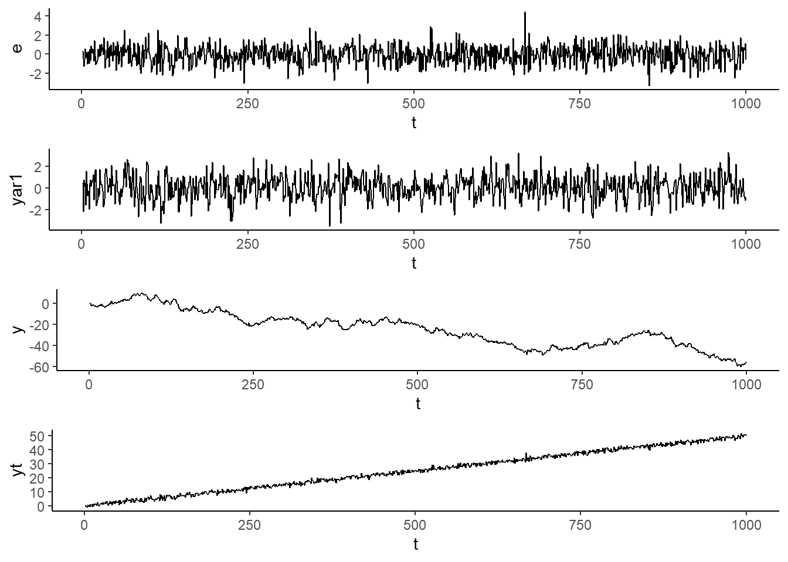

Capítulo5 Modelos con datos temporales: Introducción
5.1 Introducción
Una serie de tiempo es un proceso ordenado secuencialmente en el tiempo. Decimos que \(t\) es un entero que denota el periodo de tiempo. La mayoría de las series de tiempo de variables económicas se registran a intervalos discretos: anual, trimestral, mensual, diario. Decimos que el número de periodos observados por año define la frecuencia de la serie.
Un aspecto crucial es la dependencia temporal de las observaciones qeu están cercanas en tiempo calendario. Por ejemplo, la tasa de inflación de junio está relacionada con la tasa de inflación de mayo.
5.1.1 Ejemplos
library(fpp3)
library(readxl)
library(ggpubr)
piby<- read_excel(here("Econometria2","Data","pibyear.xlsx"))
piby<-tsibble(piby,index=year)
pib.plot<-ggplot(piby,aes(x=year,y=rgdpo))+geom_line()+labs(title="PIB",
y="USD (millones 2011)",x="")+theme_minimal()
piby<-piby%>%mutate(gpib=difference(log(rgdpo),lag=1)*100)
gpib.plot<-ggplot(piby,aes(x=year,y=gpib))+geom_line()+labs(title="Crecimiento",y="%",x="",caption="Penn World Tables")+theme_minimal()+geom_hline(yintercept=0)
ggarrange(pib.plot,gpib.plot,ncol=2) mes<- read_excel(here("Econometria2","Data","tsmonth.xlsx"))
mes<-mes%>%mutate(date=yearmonth(date))%>%as_tsibble(index=date)
ipc.plot<-ggplot(mes,aes(x=date,y=ipc))+geom_line()+labs(title="IPC",y="",x="")+theme_minimal()
inf.plot<-mes%>%mutate(inf=difference(log(ipc),lag=1)*100)%>%ggplot(aes(x=date,y=inf))+geom_line()+theme_minimal()+labs(title="Inflación Mensual",x="",y="",caption="DANE")
ggarrange(ipc.plot,inf.plot,ncol=2)
mes%>%mutate(inf=difference(log(ipc),lag=1)*100)%>%
gg_season(inf,labels="both")+
labs(y="%",title="Gráfico estacional: inflación mensual",x="")
ipcdcmp<-mes%>%model(stl=STL(ipc))
components(ipcdcmp)%>%autoplot()
wti.plot<-ggplot(mes,aes(x=date,y=wti))+geom_line()+labs(title="WTI",y="US$/barril",x="")+theme_minimal()
gwti.plot<-mes%>%mutate(gwti=difference(log(wti),lag=1)*100)%>%ggplot(aes(x=date,y=gwti))+geom_line()+theme_minimal()+labs(title="Var mes WTI",x="",y="%",caption="IEA")
ggarrange(wti.plot,gwti.plot,ncol=2)
trm<- read_excel(here("Econometria2","Data","tsdaily.xlsx"))
trm<-trm%>%mutate(date=ymd(date))%>%as_tsibble(index=date)
trm.plot<-ggplot(trm,aes(x=date,y=trm))+geom_line()+labs(title="TRM",y="COP/USD",x="")+theme_minimal()
dep.plot<-trm%>%mutate(dep=difference(log(trm),lag=1)*100)%>%ggplot(aes(x=date,y=dep))+geom_line()+theme_minimal()+labs(title="Depreciación",x="",y="%",caption="BanRep")
ggarrange(trm.plot,dep.plot,ncol=2)5.2 Autocorrelaciones
Para explorar el grado de dependencia entre la variable en el periodo \(t\) y sus rezagos, \(t-s\), usamos el coeficiente de correlación
\[ \rho_s=\dfrac{Cov(X_t,X_{t-s})}{Var(X_t)} \]
Cuyo estimador muestral es
\[ \hat{\rho}_s=\dfrac{\sum_{t=s+1}^{T}(X_t-\bar{X})(X_{t-s}-\bar{X})}{\sum_{t=1}^{T}(X_t-\bar{X})^2} \]
acfpib<-piby%>%ACF(rgdpo)%>%autoplot()+labs(title="ACF PIB")
acfgpib<-piby%>%ACF(gpib)%>%autoplot()+labs(title="ACF Crecimiento PIB")
ggarrange(acfpib,acfgpib,ncol=2)
acfipc<-mes%>%mutate(lipc=log(ipc))%>%ACF(lipc,lag_max=48)%>%autoplot()+labs(title="ACF Ln IPC")
acfinf<-mes%>%mutate(inf=difference(log(ipc),lag=1))%>%ACF(inf,lag_max=48)%>%autoplot()+labs(title="ACF Inflación")
ggarrange(acfipc,acfinf,ncol=2)acftrm<-trm%>%mutate(ltrm=log(trm))%>%ACF(ltrm)%>%autoplot()+labs(title="ACF Ln TRM")
acfdep<-trm%>%mutate(dep=difference(log(trm),lag=1))%>%ACF(dep)%>%autoplot()+labs(title="ACF Depreciación")
ggarrange(acftrm,acfdep,ncol=2)
Ejercicio
Para cada una de las series realice un análisis gráfico, lo que incluye la autocorrelación, de las variables en niveles y en diferencias. Trabaje con la serie en logaritmo cuando lo considere relevante
ISE: índice de Seguimiento de la Economía. Serie de frecuencia mensual publicada por el DANE
Tasa de desempleo total nacioanl. Serie de frecuencia mensual publidada por el DANE
Precio de cierre de Bitcoin. Serie de frecuencia diaria. Se sugiere descargar los datos de Yahoo Finance usando el paquete quantmod
5.3 Estacionariedad
Una proceso de serie de tiempo es una secuencia de variables aleatorias indexadas en el tiempo. Nuestros datos, lo que observamos, es una realización de este proceso estocástico. En analogía a los datos de sección cruzada, debemos tener en cuenta que nuestros datos son una realización de muchas posibles.
Si tengo una colección de variables aleatorias ordenadas en una secuencia y muevo esa secuencia h periodos adelante y la distribución de probabilidad conjunta no cambia, entonces decimos que el proceso es estacionario.
Ejemplo
La variable aleatoria \(Y_t\) toma el valor de la cara superior en el lanzamiento de un dato en \(t\). Realiza 1000 lanzamientos sucesivos. Genera la siguiente realización

Las primeras 100 observaciones lucen similares a las siguientes 100
Considere ahora los siguientes procesos
\(Y_t=e_t\)
\(Y_t=0.3Y_{t-1}+e_t\)
\(Y_t=Y_{t-1}+e_t\)
\(Y_t=0.05t+e_t\)
Donde \(e_t\) es ruido blanco. Decimos que una secuencia es ruido blanco si sus elementos tienen media cero, varianza constante, y las autocorrelaciones son cero
\(E(e_t)=0\)
\(E(e_t^2)=\sigma^2\)
-\(E(e_te_\tau)=0\) para todo \(t\neq\tau\)
e=rnorm(1000)
y=cumsum(e)
b<-0.05
yar1<-arima.sim(list(order=c(1,0,0),ar=0.3),n=1000)
tsdf<-data.frame(y,e,yar1)
tsdf<-tsdf%>%mutate(t=seq(1,1000,by=1),yt=b*t+e)
w.plot<-ggplot(tsdf,aes(x=t,y=e))+geom_line()+theme_classic()
y.plot<-ggplot(tsdf,aes(x=t,y=y))+geom_line()+theme_classic()
yar1.plot<-ggplot(tsdf,aes(x=t,y=yar1))+geom_line()+theme_classic()
yt.plot<-ggplot(tsdf,aes(x=t,y=yt))+geom_line()+theme_classic()
ggarrange(w.plot,yar1.plot,y.plot,yt.plot,ncol=1)
Similar al ejemplo del dado, note que en las realizaciones de los dos primeros procesos las primeras 100 observaciones son similares a las siguientes. En los otros dos procesos, en cambio, no es así.
Estricta
Decimos que el proceso estocástico \(\{Y_t:t=1,2,...\}\) es estacionario si para toda colección de índices de tiempo \(1\leq t_1<t_2<...<t_m\) la distribución conjunta de \((Y_{t_1},Y_{t_2},...,Y_{t_m})\) es igual a la de \((Y_{t_{1+h}},Y_{t_{2+h}},...,Y_{t_{m+h}}\) para todos los enteros \(h\geq 1\)
En Covarianza: débil
\(\{Y_t:t=1,2,...\}\) con \(E[Y_t^2<\infty]\) es estacionario en covarianza si
\(E(Y_t)=\mu\) para todo \(t\)
\(Var(x_t)=\gamma_0\) para todo \(t\)
Para cualquier \(t,j\geq1,Cov(Y_t,Y_{t+j})=\gamma_j\), es que depende solo de \(j\) y no de \(t\)
Dependencia débil
Decimos que un proceso estacionario (en covarianza) es debilmente depediente si la correlación entre \(x_t\) y \(x_{t+h}\) tiende a cero rápidamente en la medida que \(h\to \infty\)
Este supuesto es importante para poder aplicar la Ley de Grandes Números y el Teorema Central del Límite, de tal manera que nos permite decir que lo que calculamos en la muestra converge a los valores poblacionales (LLN), y nos facilita la inferencia (CLT)
Con los datos lo podemos observar usando la ACF. Si esta decae rápidamente de cero entonces es indicativo de dependencia débil
Ejercicio
Para los procesos siguientes, simule los datos y haciendo uso del análisis gráfico y de la función de autocorrelación, ACF, evalue si estos son estacionarios y presentan dependencia débil. Tenga en cuenta que \(e_t\sim N(0,1)\) es un ruido blanco gaussiano
\(Y_t=Z+e_t\) donde \(Z\) es una variable aleatoria, \(Z\sim N(0,4)\)
\(Y_t=(-1)^{t}Z\) donde \(Z\) es una variable aleatoria, \(Z\sim N(0,4)\)
\(Y_t=Y_{t-1}+e_t\). Asuma como valor incicial \(Y_0=0\)
\(Y_t=0.1+Y_{t-1}+e_t\). Asuma como valor incicial \(Y_0=0\)
\(Y_t=e_t-0.4e_{t-1}\) Asuma como valor incicial \(e_0=0\)
\(Y_t=0.7+0.9Y_{t-1}+e_t\)
\(y_t=0.7-0.8Y_{t-1}+e_t\)
\(Y_t=1.6Y_{t-1}-0.9Y_{t-2}+e_t\)
Solución
Simulamos los 8 procesos
e<-rnorm(1000)
Z<-rnorm(1,0,2)
time<-seq(1,1000)Y1<-Z+e
Y2<-(-1)^time*Z
Y3<-numeric(1000)
Y3[1]<-e[1]
for(t in 2:1000){
Y3[t]<-Y3[t-1]+e[t]
}
Y4<-numeric(1000)
Y4[1]<-0.1+e[1]
for(t in 2:1000){
Y4[t]<-Y4[t-1]+0.1+e[t]
}
Y5<-numeric(1000)
Y5[1]<-e[1]
for(t in 2:1000){
Y5[t]<-e[t]-0.4*e[t-1]
}
Y6<-numeric(1000)
Y6[1]<-0.7+e[1]
for(t in 2:1000){
Y6[t]<-0.7+0.9*Y6[t-1]+e[t]
}
Y7<-numeric(1000)
Y7[1]<-0.7+e[1]
for(t in 2:1000){
Y7[t]<-0.7-0.8*Y7[t-1]+e[t]
}
Y8<-numeric(1000)
Y8[1]<-e[1]
Y8[2]<-e[2]
for(t in 3:1000){
Y8[t]<-1.6*Y8[t-1]-0.9*Y8[t-2]+e[t]
}df<-data.frame(e,time,Y1,Y2,Y3,Y4,Y5,Y6,Y7,Y8)
df<-df%>%filter(time>10)
df<-df%>%mutate(time=seq(from=1,to=990,by=1))%>%as_tsibble(index=time)- Veamos para el proceso \(Y_t=Z+e_t\)
Y1.plot<-ggplot(df,aes(x=time,y=Y1))+geom_line()+geom_hline(yintercept=mean(df$Y1),color="red",linetype="dashed")
Y1.ACF<-df%>%ACF(Y1)%>%autoplot()
ggarrange(Y1.plot,Y1.ACF,ncol=1)
El proceso \(Y_t=Z+e_t\) luce estacionario. De hecho, cumple las condiciones de estacionariedad. Veamos
\(E(Y_t)=E(Z)+E(e_t)\)=0+0=0
\(\gamma_{0t}\equiv Var(Y_t)=Var(Z)+Var(e_t)=4+1=5\)
\(\gamma_{jt}\equiv Cov(Y_t,Y_{t-j})=E(Z+e_t)(Z+e_{t-j})=4\)
Sim embargo, si observa claramente vera que el promedio temporal calculado con sus datos converge a \(Z\) pero no a \(E(Y_t)=0\). Así mismo, la autocovarianza siempre es constante e igual a 4, pero la ACF le arroja 0 para todos los rezagos. Es decir, el proceso es estacionario, pero no es débilmente dependiente, y por lo tanto no es ergódico. Note que el promedio temporal no converge al valor esperado.